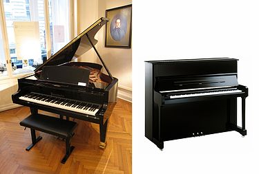
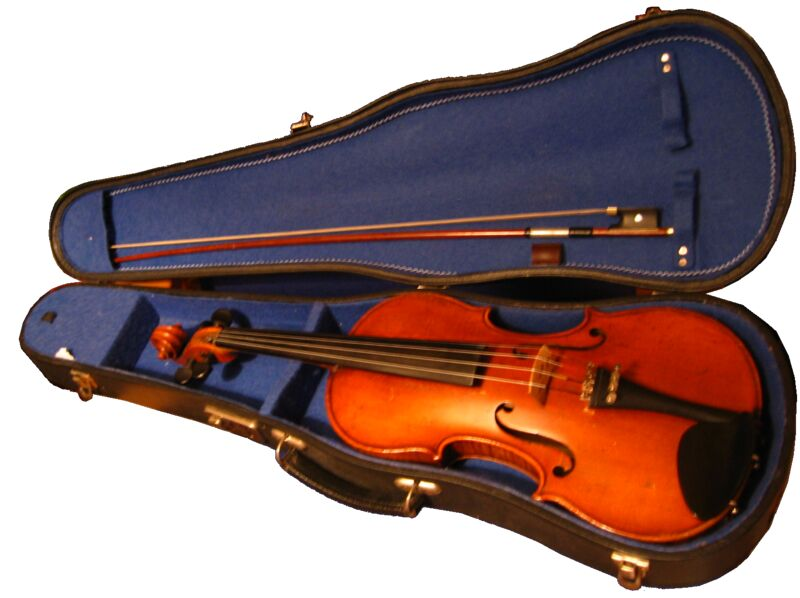
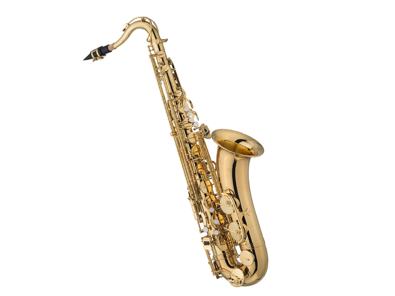

انواع ساز کلاسیک

موسیقی کلاسیک
دنیای شگفت انگیز موسیقی کلاسیک (Classical music) ممکن است برای افرادی که برای اولین بار با این ژانر مواجه می شوند، ترسناک، فاخر یا حتی کاملا نامانوس به نظر برسد. با این وجود ما معتقدیم فقط با داشتن کمی پیش زمینه و دانش هر کسی می تواند از این موسیقی باشکوه لذت ببرد و سلیقه موسیقیایی اش را به سطوح بسیار بالا تری برساند.
انواع سازها:
• پیانو:
توصیه می شود افراد با سنین بالای شش سال آموزش با این ساز را شروع کنند.
یکی از سازهای صفحهکلیددار و مشهورترین آنها است. صدای پیانو در اثر برخورد چکشهایی با سیمهای فلزی آن در داخل جعبه چوبی تولید میشود. این چکشها در اثر فشرده شدن کلیدها (کلاویهها) به حرکت در میآیند. سیمهای پیانو به صفحهای موسوم به «صفحهٔ صدا» متصل شدهاند که نقش تقویتکنندهٔ صدای آنها را دارد.
پیانو بالاترین دامنه صوتی را در بین سازهای معمول (به جز ارگ کلیسا) دارد، به طوریکه در شکل فعلیاش بهطور معمول هشت اکتاو دارد و قادر به تولید فرکانسهایی از حدود ۲۷ تا ۴۱۸۶ هرتز میباشد، در حالی که در مقام مقایسه ساز ویولن تنها قادر به تولید حدود پنج اکتاو و بهترین خوانندهها تنها قادر به خواندن حدود سه اکتاو هستند.
انواع مدل پیانو
پیانو اسپینت
پیانوهای اسپینت (Spinet) معمولآ کوتاه ترین نوع پیانوهای دیواری و از ارزانترین نوع آنها هستند. ارتفاع این پیانوها از حدود ۹۰ سانتیمتر شروع می شود و تا حداکثر ۱۰۰ سانتیمتر ادامه دارد.
جعبه صدای آنها کوچک و سیستم انقال نیرو (Action) آنها ساده ترین شکل خود را دارد به همین علت، اغلب قیمت مناسبی دارند و برای مبتدی هایی که معلوم نیست در آینده نوازندگی را ادامه دهند بسیار مناسب است. فاصله سطح کی برد تا بلندترین قسمت این پیانوها بسیار کم بوده و حداکثر حدود ۲۰ سانتی متر است.
پیانوهای دیجیتال
پیانو های دیجیتال همانطور که از نام آن پیداست از تکنولوژی دیجیتال برای تولید اصوات استفاده می کنند و از این منظر با پیانو های مکانیکی یا آکوستیک که از سیستم سیم و چکش بهره می گیرند کاملاً متفاوت هستند.
صدای این نوع پیانو با الگو برداری از صدای پیانو های آکوستیک ساخته شده است که به این الگو ها که از همه نت های یک پیانو ساخته شده اند سمپل گفته می شود. این اصوات در هنگام نواختن به کمک بلندگوهای پیانو تقویت و پخش می شود.
گرچه سیستم دیجیال تولید صوت هنوز نتوانسته جایگزین سیستم های آکوستیک که از ارتعاش سیم و انتشار صوت در هوا بهره می گیرند شود ولی به دلیل امکانات و شرایط آسانی که امروزه فراهم کرده اند این نوع پیانو توانسته جایگاه خود را در بازار پر رقابت پیانو تثبیت کرده و نظر بسیاری از کاربران پیانو را به خود جلب کند.
پیانو دیواری (vertical – upright)
نوع دوم پیانو پیانو دیواری است که به زبان های اروپایی به آن پیانینو یا پیانوی کوچک می گویند. همچنین پیانو آپرایت(UpRight)نام دیگر این ساز به زبان انگلیسی است. پیانو دیواری نسبت به گراند پیانو کم حجم تر و ارزان تر بوده از این رو برای استفاده در منزل مناسب تر است. سیمها در آن به صورت عمودی قرار گرفته اند و چکشها از جلو به سیم ها ضربه وارد می کنند.
پیانو کنسول
پیانو های کنسول (Console) است که از ارتفاع حدود ۱۰۰ سانتیمتر شروع می شود و تا حدود ۱۱۰ سانتیمتر ادامه پیدا می کند. ساختمان سازه آنها بگونه ای است که بدنه ای بسیار محکم و بادوام دارند و معمولآ در آموزشگاه ها یا مدارس موسیقی و نیز استودیوها برای تمرین نه معمولآ ضبط از آنها استفاده می شود.
انواع آمریکایی این پیانوها که در بازار ایران کم هستند زیبایی خاصی دارند و روی بدنه خارجی آنها زیاد کار شده است.
اگر قصد دارید از ابتدا پیانویی بخرید که به احتمال زیاد دیگر آنرا عوض نکنید، حتمآ از نوع کنسول انتخاب کنید، چراکه قیمت و دوام خیلی خوبی دارند.
بدنه این پیانوها بخصوص در قسمت کی برد، محل قرار دادن نت موسیقی (Music Rest) و نیز دیواره های اطراف کی برد به گونه ای ساخته شده است که شباهت زیادی به پیانو های بزرگ (رویال) دارد. به تفاوت سطح بالایی پیانو از کی برد در پیانوهای اسپینت و کنسول دقت کنید.
پیانوی بزرگ
گراند پیانو یا پیانوی بزرگ که به فارسی گاهی آن را پیانو رویال نامیده اند. در این نوع، سیم ها به صورت افقی قرار گرفته اند و چکشها از زیر به سیم ها ضربه می زنند. این ساز صدای با شکوه و پر طنینی دارد و بیشتر در سالن های کنسرت و ارکسترهای بزرگ استفاده می شود.
البته پیانوهای بسیار زیادی در گذشته رایج بودهاند. برای مثال، پیانوهای گنجهای، صرافی، میزی، میز منشی، دوطبقه و انواع دیگر؛ ولی امروزه دیگر آنها رواج ندارند و از پیانوهای پیشرفتهتر استفاده میشود. یک پیانو در کل دارای ۸۸ کلید است.
•ویولن:
ویولن آکوستیک
ویولن (به فرانسوی: violon) ساز زهی و آرشهای است. این ساز کوچکترین عضو سازهای زهی-آرشهای است. اصالت این ساز به کشور ایتالیا بر میگردد. برای نواختن روی شانهٔ چپ قرار میگیرد و با آرشه که در دست راست نوازنده است، نواخته میشود. کوک سیمهای ویولن از زیر به بم به ترتیب: می (سیم اول)، لا (سیم دوم)، ر (سیم سوم)، سل (سیم چهارم). اصوات سیمهای مجاور نسبت به یکدیگر فاصله پنجم درست را تشکیل میدهند. در این وسعت صدا ویولن قادر است تمام فواصل کروماتیک و کوچکتر از آن را اجرا نماید. از معروفترین نوازندگان این ساز میتوان به آنتونیو ویوالدی و نیکولو پاگانینی و پابلو دو ساراساته اشاره کرد.
• گیتار:

گیتار کلاسیک
گیتار نوعی ساز زهی است که با پیک یا انگشت نواخته میشود و از این جهت که سیمهای آن در اثر ارتعاش تولید صدا میکنند، به سازهای گروه زهی تعلق دارد. این نوع گیتار شش سیم دارد و این ساز علاوه برداشتن قدمت تاریخی قابل توجه (چه از لحاظ ساختار آن و چه از لحاظ تکنیکهای نوازندگی) توانستهاست همگام با تحولات موسیقی غرب پیشرفت چشمگیری داشته باشد؛ که در نتیجه گونههای متفاوتی از آن به وجود آمده و هماکنون جایگاه ویژهای در موسیقی جهان دارد.
• ساکسوفون:
ساز ساکسوفون
ساکسوفون (به فرانسوی: saxophone) یکی از سازهای بادی است که معمولاً از جنس برنج است و یک قمیش مشابه قمیش کلارینت دارد. مشابه کلارینت، ساکسوفون نیز سوراخهایی دارد که نوازنده از طریق مکانیزمِ کلیدی آنها را میبندد. وقتی که نوازنده کلیدی را فشار میدهد یا کلید را رها میکند، به ترتیب صفحه ای روی سوراخها قرار میگیرد یا صفحه از روی سوراخ برداشته میشود. این ساز را آدولف ساکس در دههٔ ۱۸۴۰ اختراع کرد و به نام او «ساکسوفون» نام گرفت.
ساز هایی که در سبک کلاسیک نواخته می شود:
پیانو و سازهای زهی:
ویولن، ویولا، ویولن سل، چلو (cello)، کنتر باس (contrabass)
سازهای بادی چوبی :
همانند فلوت، ابوا (oboe)، کلارینت، باسون (bassoon)، ساکسیفون، پیکولو
سازهای بادی برنجی:
شامل ترومپت، هورن (horn)، ترومبون (trombone)، توبا (tuba)
و سازهای همانند تیمپانی (timpani)، طبل بزرگ و ...